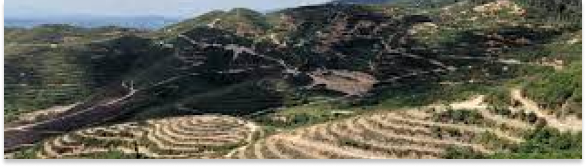
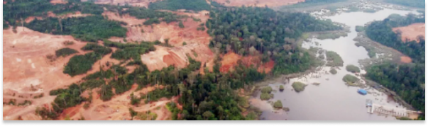

Succesful Projects
1. Royal Belum Forest Reserve, Perak
A total of 3,000 hectares of forest reserves in Perak have been explored illegally to until now.
Let us replace the trees that have been cut down to prevent the public from being affected by natural
disasters that can occur anytime.
2. Gunung Inas, Kedah
At least 12,140 hectares of hilly land on Gunung Inas is being developed as a Durian plantation, which is
suppossedly the largest in world. The Durian planting project that allegedly caused the floods was halted.
Let's plant trees there to prevent floods.

Ongoing Projects
1. Tasik Chini, Pahang
Once known for its clear water and lush greenery, Tasik Chini is now under threat from mining and logging
activities which have already changed much of its landscape and affected the lives of the Orang Asli in the area.
2. Gua Musang, Kelantan
The issue of logging led to a tiger attack in Gua Musang. A villager was attacked while out looking for fish to
celebrate a paddy festival in Kampung Remau, Pos Bihai, Gua Musang, Kelantan. Let's save the forest so that the
tigers don't roam around the residential' area.
Future Projects
1. Bukit Relau, Penang
Illegal hill cutting has been done by corporate without the permission of local authority.The implications on
Bukit Relau are very severe including deforestation of water catchment forests resulting in landslides, flooding,
impacts on water supply etc.
2. Tanjung Bungah, Penang
Deadly landslide which had killed 11 people on the construction site of two 49 storey residential towers.
This is due to the deforestation that causes a hill slope development which could lead to major environmental implications.
